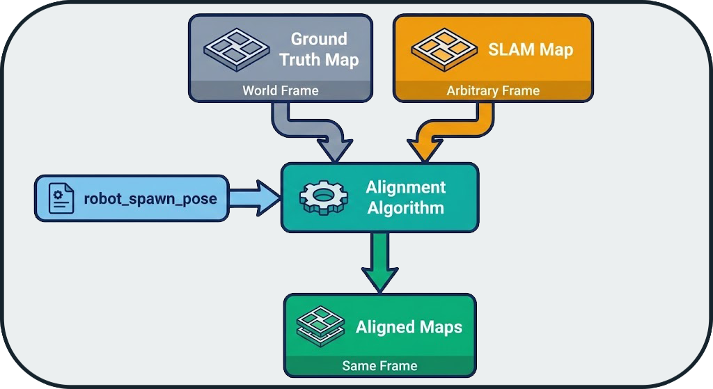
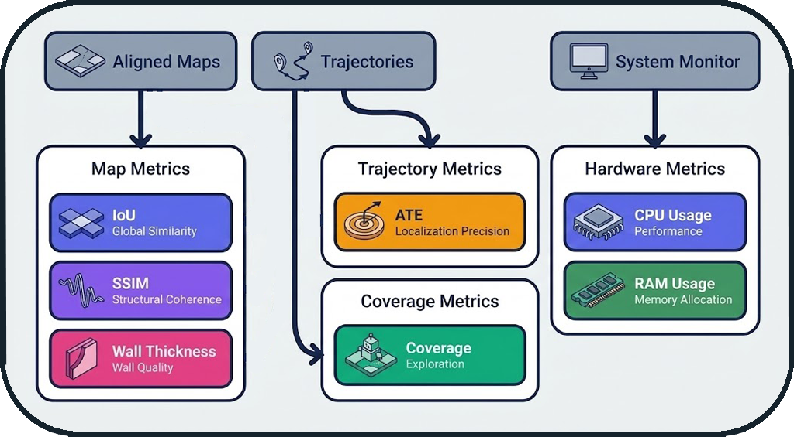

Evaluation Architecture
Evaluation is the pillar that transforms raw benchmark data into quantifiable, actionable metrics. This document describes the architecture of the evaluation system and its design principles.
Overview
Concept: Post-Execution Pipeline
Evaluation is decoupled from execution. It occurs after the run is complete, ensuring that the benchmark is not disturbed by expensive calculations.

Advantage: The system can evaluate past runs without re-running them.
Pipeline Architecture
1. Data Extraction
Source: Rosbag2 recorded during the run
Extracted Data:
- SLAM Map: Topic /map (OccupancyGrid)
- Trajectory: Topic /odom (Odometry)
- Timestamps: Temporal synchronization
Module: evaluation.data_loader
# Conceptual pseudo-code
rosbag = load_rosbag("results/runs/RUN_XXX/rosbag2/")
slam_map = extract_latest_map(rosbag, topic="/map")
trajectory = extract_trajectory(rosbag, topic="/odom")
2. Map Alignment
Problem: SLAM algorithms produce maps in arbitrary frames.
Solution: Automatic alignment based on the robot's spawn origin.

Assumption: The robot starts at a known pose in the GT map (defined in the configuration).
Transformation: Translation + Rotation to superimpose origins.
3. Metrics Calculation
The system calculates 5 complementary metrics to evaluate different aspects of SLAM quality.
Metrics Architecture

Design Principles
| Metric | Objective | Principle |
|---|---|---|
| IoU | Measure correct coverage | Intersection / Union of occupied areas |
| SSIM | Measure perceptual quality | Structural similarity (shapes, contours) |
| Wall Thickness | Measure sharpness | Average thickness of detected walls |
| ATE | Measure localization precision | Absolute Trajectory Error |
| Coverage | Measure exploration | Percentage of free space explored |
| CPU/RAM | Measure performance | Average resource consumption |
Complementarity of Metrics
Each metric captures a different aspect:
- IoU: "Did I map the right areas?"
- SSIM: "Are the shapes correct?"
- Wall Thickness: "Are the walls sharp or blurry?"
- ATE: "Is my localization precise?"
- Coverage: "Did I explore the entire space?"
- CPU/RAM: "Is the system lightweight or resource-heavy?"
4. Visualization Generation
Objective: Make metrics visually interpretable.
Generated Visualizations:
- Overlay Maps: Superimposed GT (red) + SLAM (green)
- Difference Heatmap: Difference map (errors in red)
- Trajectory Plot: GT vs SLAM trajectory
- Coverage Evolution: Coverage graph over time
Module: evaluation.visualizer
Architectural Principles
1. Separation of Concerns
evaluation/
├── data_loader.py # Rosbag extraction
├── alignment.py # Map alignment
├── metrics.py # Metric calculation
├── visualizer.py # Graph generation
└── report_generator.py # Results aggregation
Each module has a single responsibility and can be tested independently.
2. Reproducibility
Guarantee: Two evaluations of the same rosbag produce the same results.
Mechanism: - No randomness - Fixed parameters (resolution, thresholds) - Determinism of algorithms
3. Extensibility
Adding a new metric:
# evaluation/metrics.py
class NewMetric(BaseMetric):
def compute(self, gt_map, slam_map):
# Calculation logic
return score
Registration:
METRICS_REGISTRY = {
"iou": IoUMetric(),
"ssim": SSIMMetric(),
"new_metric": NewMetric(), # Addition
}
Evaluation Workflow
Complete Sequence

Typical Timeline
t=0s : Rosbag loading (5-10s)
t=10s : SLAM map extraction
t=15s : Map alignment (1-2s)
t=17s : Metrics calculation (10-20s)
t=35s : Visualization generation (5-10s)
t=45s : Writing metrics.json
Total Duration: 30-60 seconds (depends on map size)
Edge Case Management
1. Empty SLAM Map
Detection: No occupied cells in /map
Action: Metrics set to 0, warning in logs
2. Missing GT Map
Detection: File map_gt.pgm not found
Action: Automatic generation from SDF (see GT Map Generation)
3. Extreme Misalignment
Detection: IoU < 0.1 after alignment
Action: Attempt realignment with ICP (Iterative Closest Point)
4. Incomplete Trajectory
Detection: Fewer than 10 poses in /odom
Action: ATE marked as "N/A", warning
Optimizations
1. Parallel Calculation
Independent metrics are calculated in parallel:
with ThreadPoolExecutor() as executor:
futures = {
executor.submit(compute_iou, gt, slam): "iou",
executor.submit(compute_ssim, gt, slam): "ssim",
executor.submit(compute_ate, gt_traj, slam_traj): "ate",
}
Gain: ~40% reduction in evaluation time
2. GT Map Caching
GT maps are cached to avoid reloading them for each evaluation.
GT_CACHE = {}
def load_gt_map(dataset_name):
if dataset_name not in GT_CACHE:
GT_CACHE[dataset_name] = load_pgm(f"maps/{dataset_name}_gt.pgm")
return GT_CACHE[dataset_name]
Next Steps
- System Overview: Architecture overview
- Orchestrator Architecture: State machine and probes
- Tools: Infrastructure and advanced features
- FAQ: Frequently Asked Questions
- API Reference: Code documentation